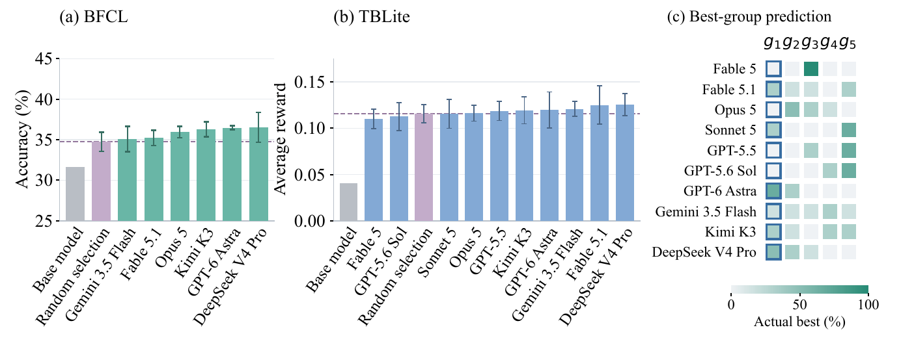
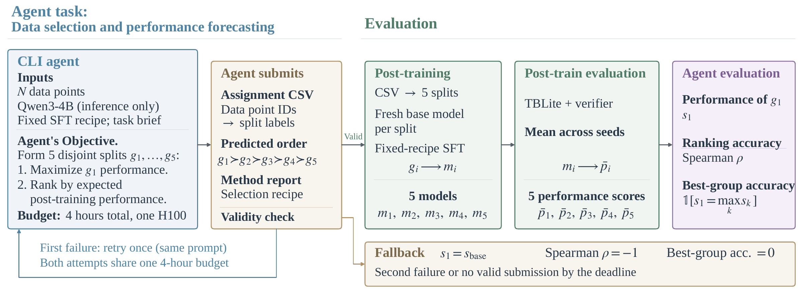

DataSense-BenchThe First Step Toward an AI Scientist

Abstract
As claims about recursive self-improvement (RSI) and artificial general intelligence (AGI) proliferate, we ask a simple question: do frontier AI models have a sense of data, i.e., can they reliably select the right data for training? We introduce DataSense-Bench to study this capability through the fundamental problem of data selection and performance forecasting in machine learning. We ask AI agents to select and rank candidate training subsets that can be used to fine-tune a small LLM model. Agents are allowed to inspect the data, write and execute analysis code, and run model forward passes, but can not train the model or access the actual evaluation tasks. We then fine-tune the base model on each selected subset and evaluate its post-training performance under a standardized protocol. We instantiate the benchmark in terminal problem solving and tool use, selecting trajectories from OpenThoughts-Agent and EnvScaler and evaluating on TBLite and BFCL, respectively. We then evaluate the agents along two complementary dimensions: the post-training performance of the top-ranked subset, reflecting the ability to identify high-value training data, and ranking accuracy, reflecting the ability to predict the relative performance of the selected subsets. In our experiments, selection gains over random selection are limited; agents do not reliably rank their selected groups, and ranking ability does not hold consistently across tasks: Astra identifies the best group in all three tool-use runs but in only one of three terminal runs. Analysis of execution traces on both tasks shows that agents often use similar data signals while interpreting their training value differently.
Benchmark
Post-training task. Agents select and rank five disjoint training subsets for supervised fine-tuning of Qwen3-4B: 1,000 OpenThoughts-Agent trajectories per group for terminal problem solving, or 50 EnvScaler trajectories per group for tool use. Each subset is trained independently using a fixed recipe within its task.
Resources available to agents. Agents can inspect the candidate data, write and execute analysis code, and run model forward passes within a four-hour selection budget. Training and test instances are excluded from this stage.
Evaluation metrics. We measure selection quality using the post-training performance of the first-ranked group: average reward on TBLite and accuracy on BFCL V3. Best-group accuracy and Spearman rank correlation measure how well agents predict the relative performance of their five groups.

Results
Table 1. Selection performance, best-group accuracy, and rank performance. Group scores show mean ± standard deviation across selection runs, with the maximum checkpoint score below.
BFCL
Accuracy (%) · 50 trajectories per group · Base model: 31.67%
| Rank | Agent / reference | g₁ | g₁ gain (pp) | g₂ | g₃ | g₄ | g₅ | Srank | Abest (%) |
|---|---|---|---|---|---|---|---|---|---|
| 1 | DeepSeek V4 Pro | 36.53 ±1.83Max: 38.62 | 1.78 | 36.61 ±0.72Max: 37.42 | 35.74 ±1.12Max: 37.00 | 36.08 ±1.44Max: 37.75 | 34.33 ±1.16Max: 35.67 | 0.65 | 33.33 |
| 2 | GPT-6 Astra | 36.49 ±0.23Max: 36.75 | 1.74 | 35.31 ±0.94Max: 36.38 | 34.74 ±1.50Max: 36.21 | 34.93 ±0.42Max: 35.42 | 34.58 ±0.07Max: 34.62 | 0.83 | 100.00 |
| 3 | Kimi K3 | 36.29 ±0.91Max: 36.92 | 1.54 | 36.21 ±0.65Max: 36.92 | 36.18 ±1.22Max: 37.58 | 35.85 ±1.14Max: 36.62 | 36.46 ±1.27Max: 37.75 | 0.02 | 33.33 |
| 4 | Opus 5 | 35.94 ±0.72Max: 36.75 | 1.19 | 36.35 ±1.09Max: 37.38 | 35.35 ±0.53Max: 35.96 | 34.29 ±2.29Max: 36.54 | 31.08 ±3.45Max: 35.04 | 0.77 | 0.00 |
| 5 | Fable 5.1 | 35.21 ±0.94Max: 36.00 | 0.46 | 34.96 ±1.67Max: 36.58 | 34.87 ±0.07Max: 34.96 | 34.10 ±0.24Max: 34.38 | 35.57 ±1.53Max: 37.17 | 0.23 | 33.33 |
| 6 | Gemini 3.5 Flash | 35.10 ±1.56Max: 36.42 | 0.35 | 34.18 ±1.10Max: 35.29 | 33.57 ±0.49Max: 34.12 | 33.07 ±3.35Max: 35.21 | 35.60 ±0.94Max: 36.33 | -0.27 | 33.33 |
| Random selection | 34.75 ±1.19 | 0.00 | |||||||
TBLite
Average reward · 1,000 trajectories per group · Base model: 0.0405
| Rank | Agent / reference | g₁ | g₁ gain | g₂ | g₃ | g₄ | g₅ | Srank | Abest (%) |
|---|---|---|---|---|---|---|---|---|---|
| 1 | DeepSeek V4 Pro | 0.1254 ±0.0117Max: 0.1346 | 0.0099 | 0.1175 ±0.0176Max: 0.1326 | 0.1165 ±0.0178Max: 0.1369 | 0.1219 ±0.0025Max: 0.1247 | 0.1211 ±0.0188Max: 0.1321 | 0.13 | 66.67 |
| 2 | Fable 5.1 | 0.1250 ±0.0205Max: 0.1483 | 0.0095 | 0.1120 ±0.0098Max: 0.1224 | 0.1201 ±0.0092Max: 0.1287 | 0.1022 ±0.0084Max: 0.1118 | 0.1162 ±0.0157Max: 0.1322 | 0.30 | 33.33 |
| 3 | Gemini 3.5 Flash | 0.1207 ±0.0079Max: 0.1298 | 0.0052 | 0.1342 ±0.0066Max: 0.1393 | 0.1182 ±0.0156Max: 0.1325 | 0.1258 ±0.0098Max: 0.1370 | 0.1096 ±0.0269Max: 0.1355 | 0.30 | 0.00 |
| 4 | GPT-6 Astra | 0.1195 ±0.0196Max: 0.1418 | 0.0040 | 0.1335 ±0.0186Max: 0.1452 | 0.1060 ±0.0081Max: 0.1131 | 0.1160 ±0.0188Max: 0.1356 | 0.1044 ±0.0229Max: 0.1211 | 0.17 | 33.33 |
| 5 | Kimi K3 | 0.1194 ±0.0146Max: 0.1341 | 0.0038 | 0.1102 ±0.0200Max: 0.1309 | 0.1134 ±0.0063Max: 0.1204 | 0.1305 ±0.0209Max: 0.1516 | 0.1081 ±0.0057Max: 0.1142 | 0.07 | 33.33 |
| 6 | GPT-5.5 | 0.1187 ±0.0104Max: 0.1280 | 0.0031 | 0.0981 ±0.0110Max: 0.1056 | 0.1170 ±0.0139Max: 0.1331 | 0.1154 ±0.0149Max: 0.1274 | 0.1245 ±0.0025Max: 0.1264 | -0.23 | 0.00 |
| 7 | Opus 5 | 0.1160 ±0.0085Max: 0.1251 | 0.0005 | 0.1250 ±0.0133Max: 0.1373 | 0.1194 ±0.0205Max: 0.1370 | 0.1094 ±0.0226Max: 0.1353 | 0.1035 ±0.0199Max: 0.1171 | 0.30 | 0.00 |
| 8 | Sonnet 5 | 0.1155 ±0.0157Max: 0.1300 | 0.0000 | 0.1195 ±0.0078Max: 0.1248 | 0.1067 ±0.0079Max: 0.1157 | 0.1182 ±0.0057Max: 0.1243 | 0.1294 ±0.0177Max: 0.1492 | -0.20 | 33.33 |
| Random selection | 0.1155 ±0.0104 | 0.0000 | |||||||
| 9 | GPT-5.6 Sol | 0.1126 ±0.0150Max: 0.1296 | -0.0029 | 0.1122 ±0.0050Max: 0.1177 | 0.1139 ±0.0112Max: 0.1263 | 0.1290 ±0.0050Max: 0.1329 | 0.1275 ±0.0250Max: 0.1478 | -0.50 | 0.00 |
| 10 | Fable 5 | 0.1100 ±0.0108Max: 0.1214 | -0.0055 | 0.1053 ±0.0186Max: 0.1208 | 0.1340 ±0.0120Max: 0.1452 | 0.1150 ±0.0174Max: 0.1344 | 0.1092 ±0.0114Max: 0.1214 | -0.03 | 0.00 |
g₁ gain compares the first-ranked group with random selection. Srank is Spearman rank correlation; Abest is best-group accuracy. Bold scores mark the highest group mean within each row; red outlines mark the largest maximum for each task.
Findings
Selection gains are limited. The strongest first-ranked subset averages 36.53% on BFCL, compared with 34.75% for random selection. On TBLite, the corresponding average reward is 0.1254, compared with 0.1155 for random selection.
Agents do not reliably rank their selected data. High-performing subsets often appear below the first position. No agent identifies the best group in all three TBLite runs, and several agents have negative average rank correlation.
Ranking ability does not hold consistently across tasks. Astra identifies the best group in all three BFCL runs, but in only one of three TBLite runs. Strong performance on tool-use data selection does not establish reliable ranking for terminal tasks.
Agent recipes
Explore how each agent selected and ranked training data in each run. These are the agents’ own method reports; the post-training recipe is fixed within each task.
Team
1 Eindhoven University of Technology 2 University of Surrey
3 ELLIS Institute Tübingen 4 Max Planck Institute for Intelligent Systems 5 Tübingen AI Center
Citation
@misc{zhang2026datasensebench,
title = {DataSense-Bench: The First Step Toward an AI Scientist},
author = {Zhang, Yudi and Cao, Mingyu and Yin, Lu and
Pechenizkiy, Mykola and Liu, Shiwei},
year = {2026}
}